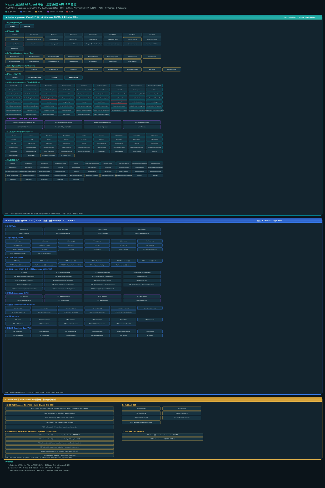

Nexus 企业级 AI Agent 平台 · 全部系统 API 清单
维度 05 · API 架构规格 · 三大类 API 全量清单（Codex JSON-RPC 复用 + Nexus REST 自建 + Webhook/WS）
L5 Harness 集成面
L2 网关
JSON-RPC 2.0
REST + WS
RBAC + HMAC
概览
| 类别 | 层级 | 协议 | 鉴权 | 来源 | 方法数 |
|---|
| A. Codex JSON-RPC | L5 Harness | JSON-RPC 2.0 | 连接级（Pod 内） | 复用 Codex 黑盒 | ~180 |
| B. Nexus REST | L2 网关 | HTTPS REST | Bearer JWT + RBAC | 自建 | ~85 |
| C. Webhook/WS | L1/L2 | HTTP 回调 / WS | HMAC / JWT | 自建 | 16 |

图 · Nexus 全部系统 API 总览（三大类分泳道）
A. Codex app-server JSON-RPC API L5 复用
源码：~/Nexus/codex-rs/app-server/ · 文档：~/Nexus/codex-rs/app-server/README.md · 传输：stdio / ws / unix socket · 不对外暴露
A.1 生命周期 Lifecycle
| 方法 | 方向 | 参数 | 响应 | 说明 |
|---|
initialize | Client→Server | clientInfo{name,title,version}, capabilities{experimentalApi, optOutNotificationMethods, extensions} | userAgent, codexHome, platformFamily, platformOs | 每连接一次。声明 MCP 扩展 |
initialized | Client→Server | — | —（通知） | 完成握手 |
A.2 Thread（会话）API
Thread 核心 API（25 方法）
| 方法 | 说明 | 标签 |
|---|
thread/start | 创建新会话。支持 ephemeral/permissions/dynamicTools/environments | |
thread/resume | 恢复已存会话。excludeTurns 分页模式 | |
thread/fork | 从已有会话分叉。lastTurnId/beforeTurnId 边界 | |
thread/archive | 归档会话 | |
thread/unarchive | 取消归档 | |
thread/delete | 硬删除会话及后代 | |
thread/read | 只读读取会话 | |
thread/list | 分页列举会话。多维度过滤 | |
thread/search | 搜索会话标题 | |
thread/searchOccurrences | 会话内搜索文本 | 实验性 |
thread/loaded/list | 列出内存中已加载会话 | |
thread/turns/list | 分页列举 turn 历史 | |
thread/items/list | 分页列举 item | |
thread/inject_items | 注入原始 Responses items | |
thread/timeline/list | 分页时间线（items + realtime + turn 边界） | 实验性 |
thread/unsubscribe | 取消订阅。60s 后卸载 | |
thread/rollback | 移除最后 N 个 turn | 已废弃 |
thread/revert | 恢复到指定 turn 前缀 | |
thread/compact/start | 触发历史压缩 | |
thread/shellCommand | 运行用户 ! 命令（unsandboxed） | |
thread/approveGuardianDeniedAction | 手动批准 Guardian 拒绝的操作 | |
thread/metadata/update | 更新元数据 | |
thread/name/set | 设置会话名称 | |
thread/memoryMode/set | 设置内存资格 | 实验性 |
memory/reset | 清除内存数据 | 实验性 |
A.4 Thread Sections / Queue / Goal
展开 16 方法
| 方法 | 说明 | 标签 |
|---|
threadSection/list | 分页列举分区 | |
threadSection/create | 创建自定义分区 | |
threadSection/update | 重命名/更新分区 | |
threadSection/delete | 删除分区 | |
thread/section/move | 移动 thread 到分区 | |
thread/settings/update | 排队更新设置 | 实验性 |
thread/queue/add | 排队用户 turn | 实验性 |
thread/queue/list | 列出排队 turn | 实验性 |
thread/queue/update | 编辑排队 turn | 实验性 |
thread/queue/delete | 删除排队 turn | 实验性 |
thread/queue/reorder | 替换排队顺序 | 实验性 |
thread/queue/start | 启动队列 turn | 实验性 |
thread/goal/set | 创建/更新目标 | |
thread/goal/get | 读取目标 | |
thread/goal/clear | 清除目标 | |
A.6 Turn（对话轮次）API
| 方法 | 参数 | 响应 | 说明 |
|---|
turn/start | threadId, input[], clientUserMessageId?, model?, effort?, cwd?, permissions?/sandboxPolicy?, approvalPolicy?, outputSchema? | {turn{id,status,items[],error}} | 发送用户输入启动 Codex 生成 |
turn/settings/update | threadId, turnId, model?, effort?, serviceTier? | {status:"applied"|"targetUnavailable"} | 实验性：发布设置到活跃 turn 实验性 |
turn/steer | threadId, input[], expectedTurnId | {turnId} | 向活动 turn 追加输入 |
turn/interrupt | threadId, turnId | {} | 取消活动 turn |
A.7 事件 ServerNotification（服务器推送通知）
Thread 生命周期事件（17 事件）
| 事件 | 参数 | 说明 |
|---|
thread/started | {thread} | 会话启动/分叉/取消归档 |
thread/status/changed | {threadId, status} | 状态：notLoaded/idle/active/systemError |
thread/archived | {threadId} | 归档 |
thread/unarchived | {threadId} | 取消归档 |
thread/closed | {threadId} | 卸载关闭 |
thread/deleted | {threadId} | 删除 |
thread/name/updated | {threadId, name} | 名称更新 |
thread/settings/updated | {threadId, threadSettings} | 设置变更 |
thread/tokenUsage/updated | {threadId, tokenUsage} | Token 用量 |
thread/goal/updated | {threadId, goal} | 目标变更 |
thread/goal/cleared | {threadId} | 目标清除 |
thread/queue/changed | {threadId} | 排队 turn 变化 |
thread/reverted | {threadId} | 会话恢复 |
thread/environment/connected | {threadId, environmentId} | 环境连接 |
thread/environment/disconnected | {threadId, environmentId} | 环境断开 |
thread/project/updated | {...} | 项目分配变更 |
project/changed | {...} | 项目提交变更 |
Turn 事件（11 事件）
| 事件 | 参数 | 说明 |
|---|
turn/started | {turn} | Turn 开始运行 |
turn/completed | {turn} | Turn 完成（completed/interrupted/failed） |
turn/diff/updated | {threadId, turnId, diff} | Turn 级统一 diff |
turn/plan/updated | {turnId, explanation?, plan[]} | Agent 计划 |
turn/moderationMetadata | {threadId, turnId, metadata} | 审核元数据 |
rawResponse/completed | {threadId, turnId, responseId, usage} | 原始 Responses 完成 |
model/safetyBuffering/updated | {threadId, turnId, ...} | 安全缓冲中 |
model/rerouted | {threadId, turnId, fromModel, toModel, reason} | 模型重新路由 |
model/verification | {threadId, turnId, verifications} | 账户验证 |
modelProvider/authRecoveryStarted | {threadId, turnId, provider, message} | 认证恢复开始 |
modelProvider/authRecoveryCompleted | {threadId, turnId, provider, message} | 认证恢复完成 |
Item 事件 + Realtime 事件（25+ 事件）
| 事件 | 说明 |
|---|
item/started | 新工作单元开始 |
item/completed | 工作单元完成（权威结果） |
item/agentMessage/delta | Agent 消息流式文本 |
item/plan/delta | Plan 内容流式 |
item/reasoning/summaryTextDelta | 推理摘要流式 |
item/reasoning/summaryPartAdded | 推理摘要分段 |
item/reasoning/textDelta | 原始推理文本流式 |
item/commandExecution/outputDelta | 命令输出流式 |
item/fileChange/patchUpdated | 文件变更补丁流式 |
item/fileChange/outputDelta | 已废弃 旧版 apply_patch 输出 |
item/autoApprovalReview/started | [不稳定] 自动审批审查开始 |
item/autoApprovalReview/completed | [不稳定] 自动审批审查完成 |
autoApprovalReview/strictReviewRequired | 需同步审批审查 |
compacted | 已废弃 用 contextCompaction 替代 |
thread/realtime/started | 实时会话开始 |
thread/realtime/itemAdded | 非音频实时 item |
thread/realtime/transcript/delta | 实时转录增量 |
thread/realtime/transcript/done | 实时转录完成 |
thread/realtime/item/started | 实时 item 开始 |
thread/realtime/item/transcript/delta | 转录段增量 |
thread/realtime/item/completed | 实时 item 完成 |
thread/realtime/outputAudio/delta | 输出音频块 |
thread/realtime/error | 实时错误 |
thread/realtime/closed | 实时传输关闭 |
thread/realtime/sdp | WebRTC SDP 应答 |
A.8 审批 Server→Client 请求 HITL
这些是 Server 主动发送给 Client 的 JSON-RPC request（带 id），Client 必须响应。
| 方法 | 参数 | Client 响应 | 说明 |
|---|
item/commandExecution/requestApproval | threadId, turnId, itemId, environmentId, kind, command?, cwd? | {decision: "accept"|"acceptForSession"|{acceptWithExecpolicyAmendment}|{applyNetworkPolicyAmendment}|"decline"|"cancel"} | 命令执行审批 |
item/fileChange/requestApproval | threadId, turnId, itemId, reason? | {decision: "accept"|"acceptForSession"|"decline"|"cancel"} | 文件变更审批 |
item/permissions/requestApproval | threadId, turnId, itemId, environmentId, cwd, permissions | {scope?, permissions{granted subset}} | 权限请求 |
item/tool/requestUserInput | threadId, turnId, itemId, isBlocking, questions[] | {answers[]} | 工具请求用户输入 |
mcpServer/elicitation/request | threadId, serverName, mode, message, requestedSchema?/url? | {action:"accept",content}|{action:"decline"|"cancel",content:null} | MCP 结构化输入 |
item/tool/call (DynamicToolCall) | threadId, turnId, callId, namespace, tool, arguments | {contentItems[], success} | 动态工具调用 实验性 |
attestation/generate | {threadId} | {token: "v1."} | 客户端证明 |
currentTime/read | {threadId} | {currentTimeAt: } | 外部时钟 实验性 |
A.10 配置/模型/账户
展开 40+ 方法
| 方法 | 说明 |
|---|
config/read | 读取运行时有效配置 |
config/value/write | 写入单个配置键 |
config/batchWrite | 原子批量写入配置 |
configRequirements/read | 读取受管要求约束 |
model/list | 列出可用模型 |
modelProvider/capabilities/read | 读取供应商能力 |
permissionProfile/list | 列出权限配置 |
experimentalFeature/list | 列出功能标志 |
experimentalFeature/enablement/set | 设置功能开关 |
collaborationMode/list | 列出协作模式 |
environment/add | 添加远程环境 |
environment/info | 环境信息 |
environment/status | 环境状态 |
account/read | 读取当前账户 |
account/login/start | 开始登录（apiKey/chatgpt/bedrock） |
account/login/cancel | 取消登录 |
account/logout | 登出 |
account/rateLimits/read | 读取速率限制 |
account/usage/read | 读取用量 |
review/start | 启动代码审查 |
server/diagnostics | 服务器诊断 |
feedback/upload | 上传反馈报告 |
remoteControl/* | 远程控制（8 方法） |
windowsSandbox/setupStart | Windows 沙箱设置 |
externalAgentConfig/detect | 检测外部 Agent 配置 |
externalAgentConfig/import | 导入外部 Agent 配置 |
project/list|read|create|import|update|move|delete | 项目管理（7 方法） |
A.11 错误码
| 错误码 | 说明 |
|---|
-32001 | 服务器过载，稍后重试 |
-32600 | 请求无效（V2 子 agent 拒绝直接输入） |
-32601 | 方法不存在 |
codexErrorInfo 枚举
| 值 | 说明 |
|---|
ContextWindowExceeded | 上下文窗口超限 |
SessionBudgetExceeded | 会话预算超限 |
UsageLimitExceeded | 用量限制 |
rateLimitExceeded | 上游速率限制 |
misalignmentPolicyViolation | 对齐策略违规（非重试） |
HttpConnectionFailed | HTTP 连接失败 |
ResponseStreamConnectionFailed | 响应流连接失败 |
ResponseStreamDisconnected | 响应流中断 |
ActiveTurnNotSteerable | 活动 turn 不可 steer |
BadRequest | 请求格式错误 |
Unauthorized | 未授权 |
SandboxError | 沙箱错误 |
InternalServerError | 内部错误 |
Other | 未分类 |
B. Nexus 控制平面 REST API L2 自建
协议：HTTPS REST · 鉴权：Bearer JWT + RBAC · 幂等：Idempotency-Key header · 分页：cursor+limit
B.1 认证 Auth
| Method | Path | 参数 | 鉴权 | 说明 |
|---|
| POST | /auth/login | {email, password, mfaCode?} | — | 用户名密码登录 |
| POST | /auth/refresh | {refreshToken} | refreshToken | 刷新令牌 |
| POST | /auth/logout | — | Bearer | 登出 |
| GET | /auth/me | — | Bearer | 当前用户信息 |
| POST | /auth/api-keys | {name, scopes[], expiresIn?} | Bearer | 创建 API Key |
| DELETE | /auth/api-keys/{id} | — | Bearer | 撤销 API Key |
| GET | /auth/sessions | — | Bearer | 列出活跃会话 |
| DELETE | /auth/sessions/{id} | — | Bearer | 撤销会话 |
B.2 租户/组织/用户/RBAC
展开 19 路由
| Method | Path | 鉴权 | 说明 |
|---|
| GET | /tenants | tenant:read | 列出租户 |
| POST | /tenants | tenant:create | 创建租户 |
| GET | /tenants/{id} | tenant:read | 读取租户 |
| PUT | /tenants/{id} | tenant:update | 更新租户 |
| GET | /org-units | org:read | 列出组织单元 |
| POST | /org-units | org:create | 创建组织单元 |
| PUT | /org-units/{id} | org:update | 更新组织单元 |
| DELETE | /org-units/{id} | org:delete | 删除组织单元 |
| GET | /users | user:read | 列出用户 |
| POST | /users | user:create | 创建用户 |
| GET | /users/{id} | user:read | 读取用户 |
| PUT | /users/{id} | user:update | 更新用户 |
| DELETE | /users/{id} | user:delete | 删除用户 |
| GET | /roles | role:read | 列出角色 |
| POST | /roles | role:create | 创建角色 |
| PUT | /roles/{id} | role:update | 更新角色 |
| DELETE | /roles/{id} | role:delete | 删除角色 |
| GET | /users/{id}/memberships | membership:read | 列出成员关系 |
| POST | /users/{id}/memberships | membership:create | 添加成员关系 |
B.3 工作区 Workspaces
展开 11 路由
| Method | Path | 说明 |
|---|
| GET | /workspaces | 列出工作区 |
| POST | /workspaces | 创建工作区 |
| GET | /workspaces/{id} | 读取工作区 |
| PUT | /workspaces/{id} | 更新工作区 |
| DELETE | /workspaces/{id} | 删除工作区 |
| GET | /workspaces/{id}/members | 列出成员 |
| POST | /workspaces/{id}/members | 添加成员 |
| PUT | /workspaces/{id}/members/{uid} | 更新角色 |
| DELETE | /workspaces/{id}/members/{uid} | 移除成员 |
| GET | /workspaces/{id}/settings | 读取设置 |
| PUT | /workspaces/{id}/settings | 更新设置 |
B.4 会话 Threads（REST → JSON-RPC 映射）
Nexus REST 网关接收 HTTP 请求，内部通过 JSON-RPC 桥接调用 L5 app-server。→ 表示映射。
| Method | Path | JSON-RPC 映射 | 说明 |
|---|
| GET | /threads | → thread/list | 分页列举 |
| POST | /threads | → thread/start + turn/start | 创建会话并启动首轮 |
| GET | /threads/{id} | → thread/read | 读取会话 |
| DELETE | /threads/{id} | → thread/delete | 删除 |
| POST | /threads/{id}/resume | → thread/resume | 恢复 |
| POST | /threads/{id}/fork | → thread/fork | 分叉 |
| POST | /threads/{id}/archive | → thread/archive | 归档 |
| GET | /threads/{id}/turns | → thread/turns/list | 分页 turn |
| POST | /threads/{id}/turns | → turn/start | 启动新 turn |
| POST | /threads/{id}/interrupt | → turn/interrupt | 中断 turn |
| POST | /threads/{id}/steer | → turn/steer | 追加输入 |
| GET | /threads/{id}/items | → thread/items/list | 分页 item |
| POST | /threads/{id}/messages | → turn/start（包装） | 快捷文本消息 |
| GET | /threads/{id}/timeline | → thread/timeline/list | 时间线 |
| POST | /threads/{id}/compact | → thread/compact/start | 压缩 |
| GET | /threads/{id}/search | → thread/searchOccurrences | 会话内搜索 |
| PUT | /threads/{id}/metadata | → thread/metadata/update | 更新元数据 |
| PUT | /threads/{id}/settings | → thread/settings/update | 更新设置 |
| POST | /threads/{id}/shell | → thread/shellCommand | Shell 命令 |
B.5 审批中心 Approvals
| Method | Path | 说明 |
|---|
| GET | /approvals | 列出审批 |
| GET | /approvals/pending | 待处理审批 |
| POST | /approvals | 提交审批决策 |
| GET | /approvals/{id} | 审批详情 |
| POST | /approvals/{id}/decide | 做出决策 |
| GET | /approvals/stats | 审批统计 |
| GET | /approvals/rules | 审批规则 |
| PUT | /approvals/rules | 更新规则 |
B.6 连接器 Connectors / MCP Gateway
| Method | Path | 说明 |
|---|
| GET | /connectors | 列出连接器 |
| POST | /connectors | 注册连接器 |
| GET/PUT/DELETE | /connectors/{id} | CRUD |
| GET | /connectors/{id}/tools | 列出工具 |
| POST | /connectors/{id}/tools/call | 调用工具 |
| GET | /connectors/{id}/health | 健康检查 |
| GET | /connectors/{id}/resources | MCP 资源 |
| POST | /connectors/{id}/oauth/start | OAuth 授权 |
| POST | /connectors/{id}/oauth/callback | OAuth 回调 |
B.7 计量/审计/成本
| Method | Path | 说明 |
|---|
| GET | /usage | 多维归因用量查询 |
| GET | /usage/breakdown | 用量维度分解 |
| GET | /usage/export | 导出报表 |
| GET | /usage/realtime | 实时监控 |
| GET | /audit-logs | 审计日志查询（WORM） |
| GET | /audit-logs/{id} | 审计详情 |
| POST | /audit-logs/export | 导出审计 |
| GET | /cost-dashboard | 成本仪表盘 |
| GET | /cost-dashboard/by-tenant | 按租户 |
| GET | /cost-dashboard/by-workspace | 按工作区 |
| GET | /cost-dashboard/by-model | 按模型 |
B.8 知识库 Knowledge Base / RAG
| Method | Path | 说明 |
|---|
| GET/POST | /kb/documents | 列出/上传文档 |
| GET/PUT/DELETE | /kb/documents/{id} | 文档 CRUD |
| POST | /kb/search | 语义搜索（ACL 过滤） |
| POST | /kb/embeddings | 生成嵌入向量 |
| GET/POST | /kb/collections | 集合管理 |
| DELETE | /kb/collections/{id} | 删除集合 |
| POST | /kb/ingest | 批量摄取 |
| GET | /kb/stats | 统计 |
C. Webhook 与 WebSocket 事件推送
C.1 任务完成 Webhook
用户注册 Webhook URL，Nexus 在事件发生时 POST 回调。HMAC-SHA256 签名验证。
{
"event": "turn.completed",
"tenantId": "...",
"workspaceId": "...",
"threadId": "...",
"turnId": "...",
"status": "completed",
"tokenUsage": {...},
"deliveryId": "..."
}
请求头
X-Nexus-Signature: hmac_sha256(body, secret)
X-Nexus-Event: turn.completed
X-Nexus-Delivery: {delivery_id}
X-Nexus-Timestamp: {unix_timestamp}
支持的事件类型
| 事件 | 触发条件 | 载荷 |
|---|
turn.completed | Turn 完成 | {threadId, turnId, status, tokenUsage, items[]} |
approval.requested | 审批请求产生 | {threadId, turnId, itemId, kind} |
thread.archived | 会话归档 | {threadId} |
goal.blocked | 目标 blocked | {threadId, goal} |
usage.threshold_exceeded | 用量阈值 | {tenantId, currentUsage, threshold} |
幂等性：每个 delivery 有唯一 deliveryId。5xx 自动重试（指数退避，最多 5 次）。
C.3 WebSocket 事件推送
权限驱动订阅：客户端只能收到其有权访问的会话/工作区的事件。
WS /ws/threads/{threadId}/events
Authorization: Bearer {jwt}
| 通道 | 推送内容 |
|---|
thread/{id}/events | thread/turn/item 事件实时推送 |
item/agentMessage/delta | 低延迟文本流 |
item/commandExecution/outputDelta | 命令输出流 |
turn/started / turn/completed | Turn 生命周期 |
approval | 审批请求推送 + 响应 |
dashboard | 全局用量/状态/告警 |
服务器→客户端
{
"type": "notification",
"method": "item/agentMessage/delta",
"params": {"threadId": "thr_123", "delta": "Hello"}
}
客户端→服务器（审批决策）
{
"type": "response",
"id": "req_789",
"result": {"decision": "accept"}
}
C.4 SSE 降级
| Method | Path | 说明 |
|---|
| GET | /threads/{id}/events/stream | SSE 降级（text/event-stream） |
| GET | /dashboard/stream | 仪表盘 SSE 降级 |
鉴权与幂等设计
鉴权层级
| 层级 | 机制 | 适用范围 |
|---|
| 连接级 | app-server stdio/unix（无鉴权，Pod 内） | L5 Harness 内部 |
| 网关级 | Bearer JWT（15min access / 7d refresh） | L2 REST API |
| API Key | X-API-Key header，绑定 scopes | 外部系统集成 |
| Webhook | HMAC-SHA256 签名验证 | 回调请求 |
| WebSocket | JWT 握手 + 权限驱动订阅 | 实时事件 |
| RBAC | 角色权限矩阵 | 所有 REST 路由 |
RBAC 权限矩阵
| 角色 | 关键权限 |
|---|
| platform_admin | tenant:*, org:*, user:*, role:*, cost:read |
| tenant_admin | org:*, user:*, workspace:*, connector:*, usage:read, audit:read |
| workspace_owner | workspace:*, thread:*, connector:*, kb:*, webhook:*, approval:* |
| workspace_member | thread:read/create/update, kb:read, approval:read/update |
| workspace_viewer | thread:read, kb:read, usage:read |
| api_client | 自定义 scopes |
速率限制与配额
| 维度 | 限制 | 超限行为 |
|---|
| 全局 QPS | 100 req/s（per tenant） | 429 + Retry-After |
| 并发会话 | 10 active threads（per workspace） | 429 + 排队提示 |
| 并发 Turn | 1 active turn（per thread） | 429 + "turn already active" |
| 模型调用 | 按 tenant+model 配额预扣 | UsageLimitExceeded |
| Webhook 投递 | 5 次重试（指数退避） | 标记 failed |
| WebSocket | 50 concurrent WS（per user） | 拒绝新连接 |
| API Key | 1000 req/h（per key） | 429 + X-RateLimit-Reset |
配额预扣：Turn 启动前根据模型和历史用量预扣 token 配额。完成后按实际用量结算差额。预扣不足时拒绝启动。